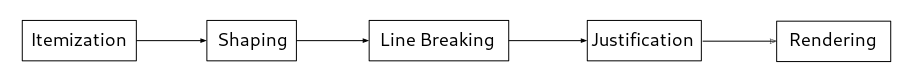

| struct | PangoItem |
| struct | PangoAnalysis |
| #define | PANGO_ANALYSIS_FLAG_CENTERED_BASELINE |
| #define | PANGO_ANALYSIS_FLAG_IS_ELLIPSIS |
| #define | PANGO_ANALYSIS_FLAG_NEED_HYPHEN |
| PangoLogAttr | |
| enum | PangoShapeFlags |
The Pango rendering pipeline takes a string of Unicode characters and converts it into glyphs. The functions described in this section accomplish various steps of this process.

GList * pango_itemize (PangoContext *context,const char *text,int start_index,int length,PangoAttrList *attrs,PangoAttrIterator *cached_iter);
Breaks a piece of text into segments with consistent
directional level and shaping engine. Each byte of text
will
be contained in exactly one of the items in the returned list;
the generated list of items will be in logical order (the start
offsets of the items are ascending).
cached_iter
should be an iterator over attrs
currently positioned at a
range before or containing start_index
; cached_iter
will be advanced to
the range covering the position just after start_index
+ length
.
(i.e. if itemizing in a loop, just keep passing in the same cached_iter
).
context |
a structure holding information that affects the itemization process. |
|
text |
the text to itemize. Must be valid UTF-8 |
|
start_index |
first byte in |
|
length |
the number of bytes (not characters) to process
after |
|
attrs |
the set of attributes that apply to |
|
cached_iter |
Cached attribute iterator, or |
[allow-none] |
a GList of PangoItem
structures. The items should be freed using pango_item_free()
probably in combination with g_list_foreach(), and the list itself
using g_list_free().
[transfer full][element-type Pango.Item]
GList * pango_itemize_with_base_dir (PangoContext *context,PangoDirection base_dir,const char *text,int start_index,int length,PangoAttrList *attrs,PangoAttrIterator *cached_iter);
Like pango_itemize(), but the base direction to use when
computing bidirectional levels (see pango_context_set_base_dir()),
is specified explicitly rather than gotten from the PangoContext.
context |
a structure holding information that affects the itemization process. |
|
base_dir |
base direction to use for bidirectional processing |
|
text |
the text to itemize. |
|
start_index |
first byte in |
|
length |
the number of bytes (not characters) to process
after |
|
attrs |
the set of attributes that apply to |
|
cached_iter |
Cached attribute iterator, or |
[allow-none] |
a GList of
PangoItem structures. The items should be freed using
pango_item_free() probably in combination with
g_list_foreach(), and the list itself using g_list_free().
[transfer full][element-type Pango.Item]
Since: 1.4
void
pango_item_free (PangoItem *item);
Free a PangoItem and all associated memory.
PangoItem *
pango_item_copy (PangoItem *item);
Copy an existing PangoItem structure.
the newly allocated PangoItem, which
should be freed with pango_item_free(), or NULL if
item
was NULL.
[nullable]
PangoItem *
pango_item_new (void);
Creates a new PangoItem structure initialized to default values.
PangoItem * pango_item_split (PangoItem *orig,int split_index,int split_offset);
Modifies orig
to cover only the text after split_index
, and
returns a new item that covers the text before split_index
that
used to be in orig
. You can think of split_index
as the length of
the returned item. split_index
may not be 0, and it may not be
greater than or equal to the length of orig
(that is, there must
be at least one byte assigned to each item, you can't create a
zero-length item). split_offset
is the length of the first item in
chars, and must be provided because the text used to generate the
item isn't available, so pango_item_split() can't count the char
length of the split items itself.
orig |
||
split_index |
byte index of position to split item, relative to the start of the item |
|
split_offset |
number of chars between start of |
new item representing text before split_index
, which
should be freed with pango_item_free().
void pango_item_apply_attrs (PangoItem *item,PangoAttrIterator *iter);
Add attributes to a PangoItem. The idea is that you have
attributes that don't affect itemization, such as font features,
so you filter them out using pango_attr_list_filter(), itemize
your text, then reapply the attributes to the resulting items
using this function.
The iter
should be positioned before the range of the item,
and will be advanced past it. This function is meant to be called
in a loop over the items resulting from itemization, while passing
the iter to each call.
Since: 1.44
GList *
pango_reorder_items (GList *logical_items);
From a list of items in logical order and the associated directional levels, produce a list in visual order. The original list is unmodified.
void pango_break (const gchar *text,int length,PangoAnalysis *analysis,PangoLogAttr *attrs,int attrs_len);
pango_break has been deprecated since version 1.44 and should not be used in newly-written code.
Determines possible line, word, and character breaks
for a string of Unicode text with a single analysis.
For most purposes you may want to use pango_get_log_attrs().
text |
the text to process. Must be valid UTF-8 |
|
length |
length of |
|
analysis |
PangoAnalysis structure from |
|
attrs |
an array to store character information in. |
[array length=attrs_len] |
attrs_len |
size of the array passed as |
void pango_get_log_attrs (const char *text,int length,int level,PangoLanguage *language,PangoLogAttr *log_attrs,int attrs_len);
Computes a PangoLogAttr for each character in text
. The log_attrs
array must have one PangoLogAttr for each position in text
; if
text
contains N characters, it has N+1 positions, including the
last position at the end of the text. text
should be an entire
paragraph; logical attributes can't be computed without context
(for example you need to see spaces on either side of a word to know
the word is a word).
text |
text to process. Must be valid UTF-8 |
|
length |
length in bytes of |
|
level |
embedding level, or -1 if unknown |
|
language |
language tag |
|
log_attrs |
array with one PangoLogAttr
per character in |
[array length=attrs_len] |
attrs_len |
length of |
void pango_find_paragraph_boundary (const gchar *text,gint length,gint *paragraph_delimiter_index,gint *next_paragraph_start);
Locates a paragraph boundary in text
. A boundary is caused by
delimiter characters, such as a newline, carriage return, carriage
return-newline pair, or Unicode paragraph separator character. The
index of the run of delimiters is returned in
paragraph_delimiter_index
. The index of the start of the paragraph
(index after all delimiters) is stored in next_paragraph_start
.
If no delimiters are found, both paragraph_delimiter_index
and
next_paragraph_start
are filled with the length of text
(an index one
off the end).
void pango_default_break (const gchar *text,int length,PangoAnalysis *analysis,PangoLogAttr *attrs,int attrs_len);
This is the default break algorithm. It applies Unicode
rules without language-specific tailoring, therefore
the analyis
argument is unused and can be NULL.
See pango_tailor_break() for language-specific breaks.
text |
text to break. Must be valid UTF-8 |
|
length |
length of text in bytes (may be -1 if |
|
analysis |
a PangoAnalysis for the |
[nullable] |
attrs |
logical attributes to fill in |
|
attrs_len |
size of the array passed as |
void pango_tailor_break (const char *text,int length,PangoAnalysis *analysis,int offset,PangoLogAttr *log_attrs,int log_attrs_len);
Apply language-specific tailoring to the breaks in
log_attrs
, which are assumed to have been produced
by pango_default_break().
If offset
is not -1, it is used to apply attributes
from analysis
that are relevant to line breaking.
text |
text to process. Must be valid UTF-8 |
|
length |
length in bytes of |
|
analysis |
PangoAnalysis structure from |
|
offset |
Byte offset of |
|
log_attrs |
array with one PangoLogAttr
per character in |
[array length=log_attrs_len] |
log_attrs_len |
length of |
Since: 1.44
void pango_shape (const char *text,int length,const PangoAnalysis *analysis,PangoGlyphString *glyphs);
Given a segment of text and the corresponding PangoAnalysis structure
returned from pango_itemize(), convert the characters into glyphs. You
may also pass in only a substring of the item from pango_itemize().
It is recommended that you use pango_shape_full() instead, since
that API allows for shaping interaction happening across text item
boundaries.
Note that the extra attributes in the analyis
that is returned from
pango_itemize() have indices that are relative to the entire paragraph,
so you need to subtract the item offset from their indices before
calling pango_shape().
text |
the text to process |
|
length |
the length (in bytes) of |
|
analysis |
PangoAnalysis structure from |
|
glyphs |
glyph string in which to store results |
void pango_shape_full (const char *item_text,int item_length,const char *paragraph_text,int paragraph_length,const PangoAnalysis *analysis,PangoGlyphString *glyphs);
Given a segment of text and the corresponding
PangoAnalysis structure returned from pango_itemize(),
convert the characters into glyphs. You may also pass
in only a substring of the item from pango_itemize().
This is similar to pango_shape(), except it also can optionally take
the full paragraph text as input, which will then be used to perform
certain cross-item shaping interactions. If you have access to the broader
text of which item_text
is part of, provide the broader text as
paragraph_text
. If paragraph_text
is NULL, item text is used instead.
Note that the extra attributes in the analyis
that is returned from
pango_itemize() have indices that are relative to the entire paragraph,
so you do not pass the full paragraph text as paragraph_text
, you need
to subtract the item offset from their indices before calling pango_shape_full().
item_text |
valid UTF-8 text to shape. |
|
item_length |
the length (in bytes) of |
|
paragraph_text |
text of the paragraph (see details). May be |
[allow-none] |
paragraph_length |
the length (in bytes) of |
|
analysis |
PangoAnalysis structure from |
|
glyphs |
glyph string in which to store results. |
Since: 1.32
void pango_shape_with_flags (const char *item_text,int item_length,const char *paragraph_text,int paragraph_length,const PangoAnalysis *analysis,PangoGlyphString *glyphs,PangoShapeFlags flags);
Given a segment of text and the corresponding
PangoAnalysis structure returned from pango_itemize(),
convert the characters into glyphs. You may also pass
in only a substring of the item from pango_itemize().
This is similar to pango_shape_full(), except it also takes
flags that can influence the shaping process.
Note that the extra attributes in the analyis
that is returned from
pango_itemize() have indices that are relative to the entire paragraph,
so you do not pass the full paragraph text as paragraph_text
, you need
to subtract the item offset from their indices before calling
pango_shape_with_flags().
item_text |
valid UTF-8 text to shape |
|
item_length |
the length (in bytes) of |
|
paragraph_text |
text of the paragraph (see details).
May be |
[allow-none] |
paragraph_length |
the length (in bytes) of |
|
analysis |
PangoAnalysis structure from |
|
glyphs |
glyph string in which to store results |
|
flags |
flags influencing the shaping process |
Since: 1.44
struct PangoItem {
gint offset;
gint length;
gint num_chars;
PangoAnalysis analysis;
};
The PangoItem structure stores information about a segment of text.
gint |
byte offset of the start of this item in text. |
|
gint |
length of this item in bytes. |
|
gint |
number of Unicode characters in the item. |
|
PangoAnalysis |
analysis results for the item. |
struct PangoAnalysis {
PangoEngineShape *shape_engine;
PangoEngineLang *lang_engine;
PangoFont *font;
guint8 level;
guint8 gravity;
guint8 flags;
guint8 script;
PangoLanguage *language;
GSList *extra_attrs;
};
The PangoAnalysis structure stores information about the properties of a segment of text.
PangoEngineShape * |
unused |
|
PangoEngineLang * |
unused |
|
PangoFont * |
the font for this segment. |
|
guint8 |
the bidirectional level for this segment. |
|
guint8 |
the glyph orientation for this segment (A PangoGravity). |
|
guint8 |
boolean flags for this segment (Since: 1.16). |
|
guint8 |
the detected script for this segment (A PangoScript) (Since: 1.18). |
|
PangoLanguage * |
the detected language for this segment. |
|
GSList * |
extra attributes for this segment. |
#define PANGO_ANALYSIS_FLAG_CENTERED_BASELINE (1 << 0)
Whether the segment should be shifted to center around the baseline. Used in vertical writing directions mostly.
Since: 1.16
#define PANGO_ANALYSIS_FLAG_IS_ELLIPSIS (1 << 1)
This flag is used to mark runs that hold ellipsized text, in an ellipsized layout.
Since: 1.36.7
#define PANGO_ANALYSIS_FLAG_NEED_HYPHEN (1 << 2)
This flag tells Pango to add a hyphen at the end of the run during shaping.
Since: 1.44
typedef struct {
guint is_line_break : 1;
guint is_mandatory_break : 1;
guint is_char_break : 1;
guint is_white : 1;
guint is_cursor_position : 1;
guint is_word_start : 1;
guint is_word_end : 1;
guint is_sentence_boundary : 1;
guint is_sentence_start : 1;
guint is_sentence_end : 1;
guint backspace_deletes_character : 1;
guint is_expandable_space : 1;
guint is_word_boundary : 1;
} PangoLogAttr;
The PangoLogAttr structure stores information about the attributes of a single character.
guint |
if set, can break line in front of character |
|
guint |
if set, must break line in front of character |
|
guint |
if set, can break here when doing character wrapping |
|
guint |
is whitespace character |
|
guint |
if set, cursor can appear in front of character. i.e. this is a grapheme boundary, or the first character in the text. This flag implements Unicode's Grapheme Cluster Boundaries semantics. |
|
guint |
is first character in a word |
|
guint |
is first non-word char after a word
Note that in degenerate cases, you could have both |
|
guint |
is a sentence boundary.
There are two ways to divide sentences. The first assigns all
inter-sentence whitespace/control/format chars to some sentence,
so all chars are in some sentence; |
|
guint |
is first character in a sentence |
|
guint |
is first char after a sentence.
Note that in degenerate cases, you could have both |
|
guint |
if set, backspace deletes one character
rather than the entire grapheme cluster. This
field is only meaningful on grapheme
boundaries (where |
|
guint |
is a whitespace character that can possibly be expanded for justification purposes. (Since: 1.18) |
|
guint |
is a word boundary, as defined by UAX29. More specifically, means that this is not a position in the middle of a word. For example, both sides of a punctuation mark are considered word boundaries. This flag is particularly useful when selecting text word-by-word. This flag implements Unicode's Word Boundaries semantics. (Since: 1.22) |
Flags influencing the shaping process.
These can be passed to pango_shape_with_flags().